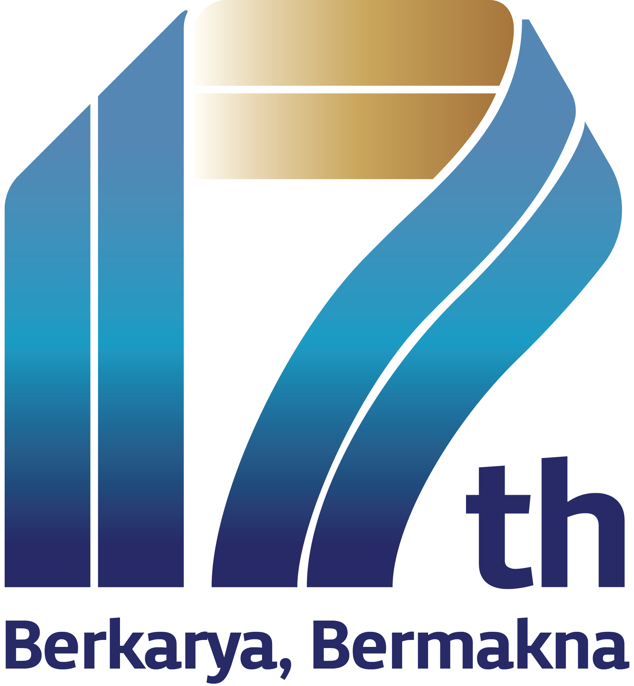

Sebagai policy bank—lembaga pembiayaan milik negara yang menjalankan kebijakan pemerintah—Indonesia Eximbank (LPEI) hadir di celah yang belum terjangkau lembaga keuangan komersial, agar produk Indonesia sanggup mengarungi tujuh samudra.
Sebagian transaksi ekspor terlalu berisiko, terlalu baru, atau terlalu besar bagi lembaga keuangan komersial. Di celah inilah LPEI hadir:
Kapal warisan Bugis-Makassar ini berlayar dengan dua tiang dan tujuh layar—lambang tekad mengarungi tujuh samudra. Seni pembuatannya diakui UNESCO sebagai Warisan Budaya Takbenda (2017).
Mandat UU = empat mandat
dalam UU No. 2/2009
Tiap layar mewakili satu instrumen untuk menyiapkan, membiayai, dan melindungi eksportir Indonesia.
Pelatihan & pendampingan agar usaha siap ekspor.
Pemberdayaan desa berbasis produk unggulan ekspor.
Coaching Program for New Exporters: pembinaan menuju ekspor perdana.
Modal kerja & investasi bagi eksportir.
Transaksi yang sulit secara komersial, tetapi penting bagi negara. Contoh: pesawat CN-235 ke Senegal.
Membuka akses ke pembiayaan & kontrak dagang.
Proteksi risiko gagal bayar pembeli luar negeri.
PT Bank Ekspor Indonesia (Persero) berdiri—cikal bakal LPEI.
1 September: Indonesia Eximbank resmi beroperasi berdasarkan UU No. 2/2009.
Penugasan Khusus Ekspor dimulai (PMK 134/2015); CPNE mulai digelar.
Desa Devisa pertama: Kakao Jembrana, Bali—kini tembus Eropa & Jepang.
Tata kelola diperkuat: SNI ISO 37001 antipenyuapan & predikat Baik dari BPKP.
17 tahun: peran policy bank dipertegas, termasuk menopang industri padat karya.
Didampingi sejak 2019 hingga Juli 2026.
Termasuk negara tujuan & pembeli baru, 2019–Juli 2026.
Pemanfaatnya menjangkau 90+ negara tujuan (April 2026).
Nilai sosial-ekonomi: pengentasan kemiskinan, pemberdayaan perempuan & kerja layak (Juni 2026).
“Sekali layar terkembang, surut kita berpantang.”Pepatah pelaut Bugis-Makassar
Tujuh belas tahun berkarya, Indonesia Eximbank terus mengisi celah dan membuka jalur—agar setiap potensi Indonesia bermakna di pasar dunia.